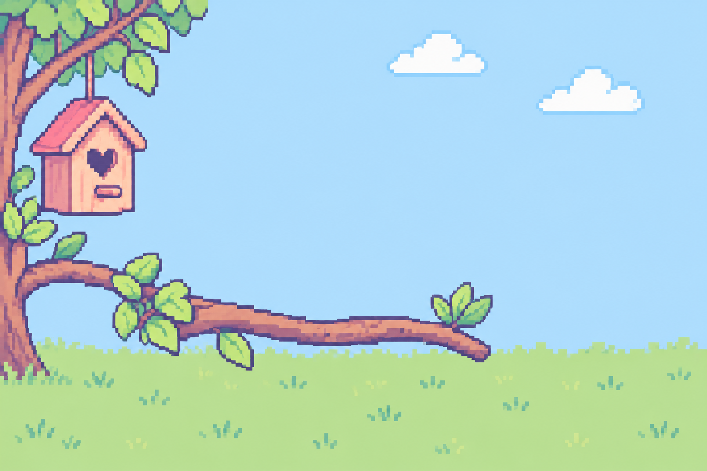

MY LITTLE AVIARY
小鳥的午後花園
陪牠吃飯、整理羽毛，一起度過小小的日常。
✿ 互動展示模式未連接 ESP32 · 數值為模擬資料

＋ 生病中需要休息與治療
YOUR LITTLE COMPANION
Tamama
成鳥 · 健康 · 清醒
有效年齡：1 小時（展示）牠正在棲架上等你。試著餵牠一點種子吧！
陪牠吃飯、整理羽毛，一起度過小小的日常。

成鳥 · 健康 · 清醒
有效年齡：1 小時（展示）牠正在棲架上等你。試著餵牠一點種子吧！